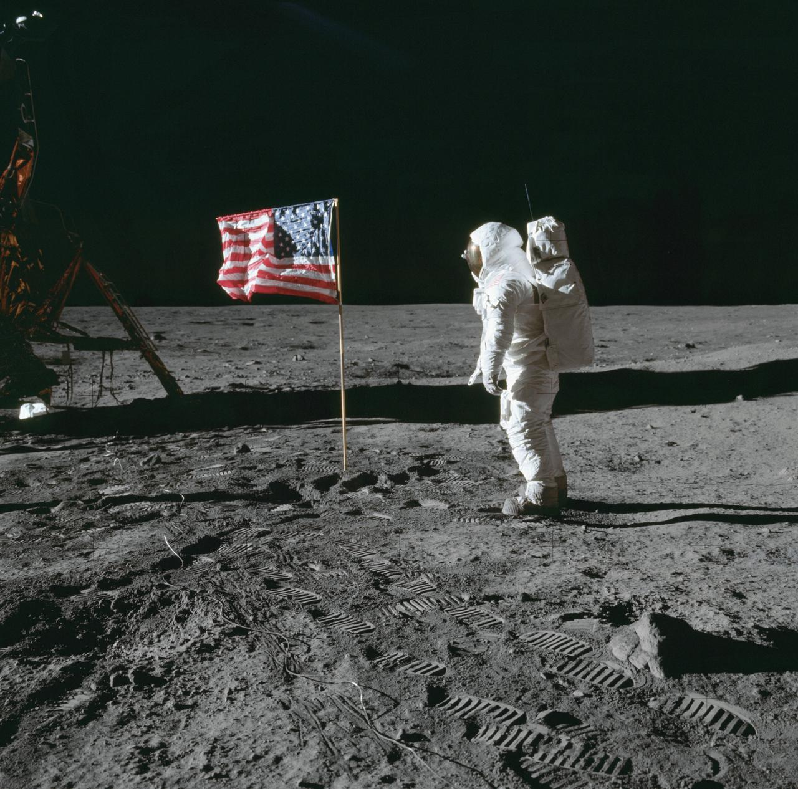

APOLLO 11
Sea of Tranquility
0.674° N · 23.473° E
Armstrong and Aldrin touched down on a dark plain of ancient lava. They spent about two and a half hours outside Eagle, setting out instruments and collecting the first lunar samples returned by a crew.
- On the surface
- Neil Armstrong and Buzz Aldrin
- In lunar orbit
- Michael Collins
